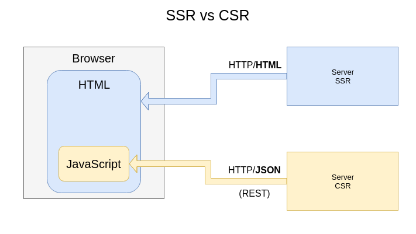

Angular Crash Course
Created for

Created by
Client-Side vs Server-Side Rendering
Client-Side vs Server-Side Rendering
Overview
{kind=link}
The Client-Side Rendering is based on AJAX
AJAX basics
AJAX basics
What is AJAX?
Asynchronous
JavaScript
And
XML
In reality, these days, the use of JSON prevails over XML, but for backward compatibility we do not say AJAJ
What is AJAX?
- AJAX is just the name for combination of technologies:
- the use of the built-in XMLHttpRequest object to request data from a web server
- the use of JavaScript and HTML DOM (to display or use the data)
With AJAX, Web applications can send and retrieve data from a Web server asynchronously (in the background) without refreshing the existent page
With AJAX we can:
- Update a web page without reloading the page
- Request data from a server - after the page has loaded
- Receive data from a server - after the page has loaded
- Send data to a server - in the background
{kind=link}
XMLHttpRequest Overview
XMLHttpRequest at MDNAJAX - Simple example
- Demo: songLyricsAjaxLoad
- You can inspect the source with browser's developer tools
Angular - set up the environment
Angular - set up the environment
Terminal
- In order to use the Angular CLI, you'll need a Terminal (CLI) on your system.
- In Windows you can use:
- Command Prompt: 10 ways to launch the Command Prompt in Windows
- PowerShell: Getting Started with Windows PowerShell
- Git Bash: install git for windows and make sure Git Bash is marked for install.
- You can even go pro and use the new Windows10 feature: Windows Subsystem for Linux (WSL)
node and npm
- Node.js is a JavaScript runtime built on Chrome's V8 JavaScript engine.
- Node.js is used for developing server-side JavaScript applications
- The npm is a package manager for Node.js, which makes it quite simple to install additional tools via packages; it comes bundled with Node.js
- Download and install the latest LTS version for your system:
- Node.js® and npm
node and npm
- Verify installation:
- Open a Terminal and type the commands given, after the prompt sign '$'
- The output should look like the commented lines (after the comment sign '#')
$ node -v
#v12.2.0
$ npm -v
#6.9.0
npm and node update
- In case you've already installed the node/npm you can update them by:
# updte npm:
npm install -g npm stable
#update node:
npm install -g node
#check version installation,
node -v
npm -v
Angular CLI
- Angular CLI is a command-line tool, developed by Angular team, that helps in generating Angular projects with required configurations, boilerplate code, and also downloads the required node packages with one simple command
- Reference: CLI Command Reference @angular.io
Angular CLI - install
# install globally the latest version:
npm install -g @angular/cli
# OR install specific version per project:
npm install @angular/cli@6
# will install in current folder the latest version of angular 6
What is Angular?
What is Angular?
- A Front-End web application framework
- strongly opinionated, imposing good practictices and cutting-edge Web Technologies
- not a library (like jQuery or React)
- A platform - apps created by Angular runs on:
- Web
- iOS and Android - using native script
- desktop (Windows, Linux, MacOS) - using electron
- Created and led by the Angular team at Google.
- the language - TypeScript, created and supported by Microsoft.
- Open-source project: github.com/angular
- Angular is a total rewrite of the AngularJS framework.
- Angular is the official name of all Angular2+ versions
- AngularJS is the official name of Angular1 version
- Angular is not an MVC, but a component-based architecture.
- Angular supports the cutting-edge technologies and best practices in Front-End Development:
- Components decoupling, separation of concerns
- Declarative templates
- Services
- Dependency Injection
- Routers
- Observables, RxJS integrated
Angular Versioning
Angular's Versioning
Angular vs AngularJS
There are 2 separated branches of Angular frameworks!
- AngularJS is the name for all v1.x versions of Angular
- Not developed any more, just LTS support fixes.
- angular.js on github
- Angular is the name, under which are developed all version after 2.0
- angular on github
Semantic versioning
From version 2.0, Angular team adopted the
semantic versioning:
{kind=link}
Reference
Get familiar with Angular CLI
Get familiar with Angular CLI
Overview
The Angular CLI is a tool to initialize, develop, scaffold and maintain Angular applications.
Create an Angular app with CLI
# Create project workspace
ng new MyApp
# navigate to the project workspace
cd MyApp
# start your app and open it in browser
ng serve --open
Main commands
ng help
| Command | Action |
|---|---|
| help | Show help |
| new | Creates a new directory and a new Angular app. |
| update | Updates your application and its dependencies. |
| serve | Builds and serves your app, rebuilding on file changes. |
| build | Builds your app and places it into the output path (dist/ by default). |
| generate | Generates and/or modifies files based on a schematic. |
| add | Add support for a library to your project. |
| test | Run unit tests in existing project. |
| e2e | Run e2e tests in existing project. |
| lint | Lints code in existing project. |
| doc | Opens the official Angular API documentation for a given keyword. |
ng command --help
You can get help for any ng command, if you put at the end of it the option --help
ng new --help
usage: ng new <name> [options]
options:
--collection (-c)
Schematics collection to use.
--dry-run (-d)
Run through without making any changes.
--force (-f)
Forces overwriting of files.
--inline-style (-s)
Specifies if the style will be in the ts file.
--inline-template (-t)
Specifies if the template will be in the ts file.
--prefix (-p)
The prefix to apply to generated selectors.
--routing
Generates a routing module.
--skip-package-json
Do not add dependencies to package.json.
--skip-tests (-S)
Skip creating spec files.
--style
The file extension to be used for style files.
--verbose (-v)
Adds more details to output logging.
--view-encapsulation
Specifies the view encapsulation strategy.
ng command --help - example
If we want to check the available options for the command ng generate component, we can get help instantly:
ng generate component --help
usage: ng generate component [options]
options:
--change-detection (-c)
Specifies the change detection strategy.
--dry-run (-d)
Run through without making any changes.
--export
Specifies if declaring module exports the component.
--flat
Flag to indicate if a dir is created.
--force (-f)
Forces overwriting of files.
--inline-style (-s)
Specifies if the style will be in the ts file.
--inline-template (-t)
Specifies if the template will be in the ts file.
--module (-m)
Allows specification of the declaring module.
--prefix (-p)
The prefix to apply to generated selectors.
--project
The name of the project.
--selector
The selector to use for the component.
--skip-import
Flag to skip the module import.
--spec
Specifies if a spec file is generated.
--styleext
The file extension to be used for style files.
--view-encapsulation (-v)
Specifies the view encapsulation strategy.
--dry-run
- Any CLI command can be run with
--dry-runoption, which will prevent CLI from making any changes to your project. - Dry-run mode is useful to preview what an ng command will do, especially, if you use it with
--verboseoption.
--dry-run - example
ng new SimplestApp --dry-run
CREATE SimplestApp/README.md (1028 bytes)
CREATE SimplestApp/angular.json (3444 bytes)
CREATE SimplestApp/package.json (1316 bytes)
CREATE SimplestApp/tsconfig.json (384 bytes)
CREATE SimplestApp/tslint.json (2805 bytes)
CREATE SimplestApp/.editorconfig (245 bytes)
CREATE SimplestApp/.gitignore (503 bytes)
CREATE SimplestApp/src/environments/environment.prod.ts (51 bytes)
CREATE SimplestApp/src/environments/environment.ts (631 bytes)
CREATE SimplestApp/src/favicon.ico (5430 bytes)
CREATE SimplestApp/src/index.html (298 bytes)
CREATE SimplestApp/src/main.ts (370 bytes)
CREATE SimplestApp/src/polyfills.ts (3194 bytes)
CREATE SimplestApp/src/test.ts (642 bytes)
CREATE SimplestApp/src/assets/.gitkeep (0 bytes)
CREATE SimplestApp/src/styles.css (80 bytes)
CREATE SimplestApp/src/browserslist (375 bytes)
CREATE SimplestApp/src/karma.conf.js (964 bytes)
CREATE SimplestApp/src/tsconfig.app.json (194 bytes)
CREATE SimplestApp/src/tsconfig.spec.json (282 bytes)
CREATE SimplestApp/src/tslint.json (314 bytes)
CREATE SimplestApp/src/app/app.module.ts (314 bytes)
CREATE SimplestApp/src/app/app.component.css (0 bytes)
CREATE SimplestApp/src/app/app.component.html (1141 bytes)
CREATE SimplestApp/src/app/app.component.spec.ts (986 bytes)
CREATE SimplestApp/src/app/app.component.ts (207 bytes)
CREATE SimplestApp/e2e/protractor.conf.js (752 bytes)
CREATE SimplestApp/e2e/src/app.e2e-spec.ts (299 bytes)
CREATE SimplestApp/e2e/src/app.po.ts (208 bytes)
CREATE SimplestApp/e2e/tsconfig.e2e.json (213 bytes)
NOTE: Run with "dry run" no changes were made.
Project Directory Structure and Files
Project Directory Structure and Files
ng new creates the following structure:
angular.json(.angular-cli.jsonin angular cli versions < 6.0)- configuration for Angular CLI
e2e/- for end-to-end (e2e) tests
node_modules/- here are installed project's node modules dependencies
package.json- dependencies and devDependencies sections specifies the node modules dependencies
package-lock.json- it is automatically generated for any operations where npm modifies either the node_modules tree, or package.json
src/app/- here is the actual logic of your app
tsconfig.json- TypeScript compiler configuration
tslint.json- tslint configuration
Angular Main Workflow Overview
Angular Main Workflow Overview
{kind=link}
Angular Architecture Overview
Angular Architecture Overview
The architecture overview as depicted in angular.io docs:

- Angular app consists of one or more modules.
- Every Angular app has at least one module - the root module (AppModule)
- Each module encompasses components and services
- A component is a unit, containing the UI (HTML + CSS) and the JS code
- Service - code, which is not intrinsic to a single component, i.e. the business logics.
Components
- A component represents a patch of screen called a view, like nav bar, search, footer and etc.
- They are independent, reusable, and are built on the concepts of Web Components
- Check the official Web Components repository: @webcomponents.org
Components
- Each component can consists of many other components (i.e. they form a component tree)
- Components can communicate with each other
- Angular creates, updates, and destroys components as the user moves through the application
- A TypeScript class can become a component if it is decorated with
@Componentdecorator
Create Components
- When creating a new project, Angular creates for us only the main app component app.component.*
- We can create other components using the Angular CLI commands:
- or by the short-hand commands:
ng generate component compName
ng g c compName
Frame a BookStore app in Angular terms
Frame a BookStore app in Angular terms
{kind=link}
Components Basics
Components Basics
@Component({
selector: 'app-root',
templateUrl: './app.component.html',
styleUrls: ['./app.component.css']
})
export class AppComponent {
title = 'app';
}
{kind=link}
- Each component defines a class that contains application data and logic, and is associated with an HTML template that defines a view to be displayed in a target environment.
- Every Angular application has at least one component, the root component that connects a component hierarchy with the page document object model (DOM).
The app component tree
The app component tree
{kind=link}
Component Declaration
- When a component A has to use component B in its template, then component B must be made available to the component A.
- Component B has to be declared in the module of the component A.
- If the component B is declared in another module, the module must be imported into the module of the first component. Otherwise, the component won’t be compiled with the template.
Components Metadata and Decorators
Components Decorators
- A component is a JavaScript class with a decorator.
- The decorator defines how the component should look on the page, how it has to be used, and the dependencies of the component.
- In decorator, we can specify various component metadata
Metadata Properties:
The minimum metadata for a component are the ones specifying the selector, template and style:
- selector - css selector that identifies this component in a template
- styleUrls - list of urls to stylesheets to be applied to this component's view
- styles - inline-defined styles to be applied to this component's view
- template - inline-defined template for the view
- templateUrl - url to an external file containing a template for the view
Metadata Properties:
- animations - list of animations of this component
- changeDetection - change detection strategy used by this component
- encapsulation - style encapsulation strategy used by this component
- entryComponents - list of components that are dynamically inserted into the view of this component
- exportAs - name under which the component instance is exported in a template
Metadata Properties:
- inputs - list of class property names to data-bind as component inputs
- outputs - list of class property names that expose output events that others can subscribe to
- providers - list of providers available to this component and its children
- viewProviders - list of providers available to this component and its view children
- queries - configure queries that can be injected into the component
The Selector
The Selector
- element-name - select by element name.
- .class - select by class name.
- [attribute] - select by attribute name.
- [attribute=value] - select by attribute name and value.
- :not(sub_selector) - select only if the element does not match the sub_selector.
- selector1, selector2 - select if either selector1 or selector2 matches.
The Template
The Template
- An Angular Template represents the view.
- It can contain an HTML code (no scripts elements, though) augmented with Angular's entities.
Interpolation {{...}}
Template Reference Variables
- A template reference variable is often a reference to a DOM element within a template
- It can also be a reference to an Angular component or directive or a web component.
- A template reference variable is declared by prefixing the variable with
#. - It can be accessed anywhere in the entire template.
Template Reference Variables - examples
<section>
<h2>Template reference variables</h2>
<input #userName placeholder="enter a user name">
<button (click)="getUserName(userName.value)">Get UserName</button>
</section>
import { Component, OnInit } from '@angular/core';
@Component({
selector: 'app-components',
templateUrl: './components.component.html',
styleUrls: ['./components.component.css']
})
export class ComponentsComponent implements OnInit {
constructor() { }
ngOnInit() {
}
getUserName(data) {
console.log(data);
}
}
Create the Components of BookStore
Create the Components of BookStore
create main components files
For now, we do not need the *.component.spec.ts file, which is used to for test cases. That's wh, we'll instruct Angular CLI to not create the spec file per component:
# the header:
ng g c header --spec==false
# the footer:
ng g c footer --spec==false
# the main:
ng g c main --spec==false
Our project tree should look like:
app/
├── app.component.css
├── app.component.html
├── app.component.spec.ts
├── app.component.ts
├── app.module.ts
├── footer
│ ├── footer.component.css
│ ├── footer.component.html
│ └── footer.component.ts
├── header
│ ├── header.component.css
│ ├── header.component.html
│ └── header.component.ts
└── main
├── main.component.css
├── main.component.html
└── main.component.ts
Directives
Directives
- Directives are markers on DOM element that tell Angular to attach a specified behaviour to an existing element.
- Angular provides a number of built-in directives, which are attributes we can add to our template elements in order to attach to them a dynamic behaviour.
- Angular includes several structural directives:
NgIfNgForNgSwitch, NgSwitchWhen, NgSwitchDefault- And several non-structural directives:
NgClassNgStyleNgControlNameNgModel
Built-In Directives
Built-In Directives
Structural Directives
- They can manipulate the DOM structure.
- With them we can add, remove or modify DOM elements.
- An asterisk (*) precedes the structural directive name
- You may apply only one structural directive to an element.
Structural Directives
- Asterisk symbol is a "syntactic sugar".
- Internally, Angular translates the
*ngSomethingattribute into a<ng-template>element, wrapped around the host element - The translation is according to the Angular's microsyntax.
<h2 *ngIf="true">shown</h2>
<h2>shown</h2>
More on property bindings ([ngif]="") will be discused in "Data and Events Bindings" theme.
NgIf
<tag *ngIf="condition"></tag>
- With
ngIfdirective we can display or hide an element based on a condition. - condition is the result of an expression that we pass into directive.
- if condition == true : the element will be included in the DOM
- if condition == false : the element will be removed (not just hide) from the DOM
NgIf - examples
import { Component, OnInit } from '@angular/core';
@Component({
selector: 'app-directives-test',
styles: [`section>h2{
border: .1em solid #000; margin: 1em;
}`],
template: `<section>
<h2 *ngIf="false">*ngIf="false"</h2>
<h2 *ngIf="true">*ngIf="true"</h2>
<h2 *ngIf="3>2-1">*ngIf="3>2-1"</h2>
<h2 *ngIf="showH2">*ngIf="showH2"</h2>
</section>`
})
export class DirectivesTestComponent implements OnInit {
showH2 = 'true';
constructor() { }
ngOnInit() {
}
}
ngIf; then; else
here is ignored
thenBlock: isValid == true
elseBlock: isValid == false
NgSwitch
- To replace multiple alternative ngIf directives
Var is A
Var is B
Var is neither A nor B
Var is A
Var is B
Var is something else
ngFor
- Allows to repeat a given DOM element and pass an element of the array (iterable object) on each iteration.
ndForis useful for generating repeating content, such as a list items, dropdown options, and so on.
- item {{item}}
. item 1
. item 2
. item 3
ngFor - example
Hello {{name}}!
export class DirectivesComponent implements OnInit {
names = ['Maria', 'Ivan'];
constructor() { }
ngOnInit() {}
}
Custom Directives
Custom Directives
Overview
- Directives are Components without a view/UI.
- Directives do not need the "template" and "style" annotations.
- We create directives by annotating a class with the @Directive decorator.
import { Directive } from '@angular/core';
@Directive({
selector: '[selector'
})
export class SomeNameDirective {
constructor() { }
}
Generate directive
- Using Angular CLI:
- directives are not created in separate folder, by default.
- Directives must be declared in Angular Modules in the same manner as components.
ng g d custom_directive
import { Directive } from '@angular/core';
@Directive({
selector: '[appCustomDirective]'
})
export class CustomDirectiveDirective {
constructor() { }
}
ElementRef and Renderer objects
- Angular provides us with two very useful objects: the ElementRef and the Renderer.
- The ElementRef object gives us direct access to the DOM element for the directive through the nativeElement property.
- The Renderer object gives us many helper methods to enable us to modify the DOM element.
- Both objects can be injected into a class
ElementRef and Renderer objects - example
ng g c customDirectiveExample
import { Component, OnInit } from '@angular/core';
import { Directive, Renderer, ElementRef } from '@angular/core';
@Component({
selector: 'app-custom-directive-example',
templateUrl: './custom-directive-example.component.html',
styleUrls: ['./custom-directive-example.component.css']
})
export class CustomDirectiveExampleComponent implements OnInit {
constructor() { }
ngOnInit() {
}
}
@Directive({
selector: '[appImportant]'
})
export class CustomDirectiveDirective {
constructor(private el: ElementRef,
private renderer: Renderer) {
renderer.setElementStyle(el.nativeElement, 'backgroundColor', '#d12929');
}
}
<ng-template>
<ng-template>
- <ng-template> is an Angular element, that is never displayed directly.
- Angular replaces the
<ng-template>and its contents with a comment, before rendering the view
These slides are based on
customised version of
framework